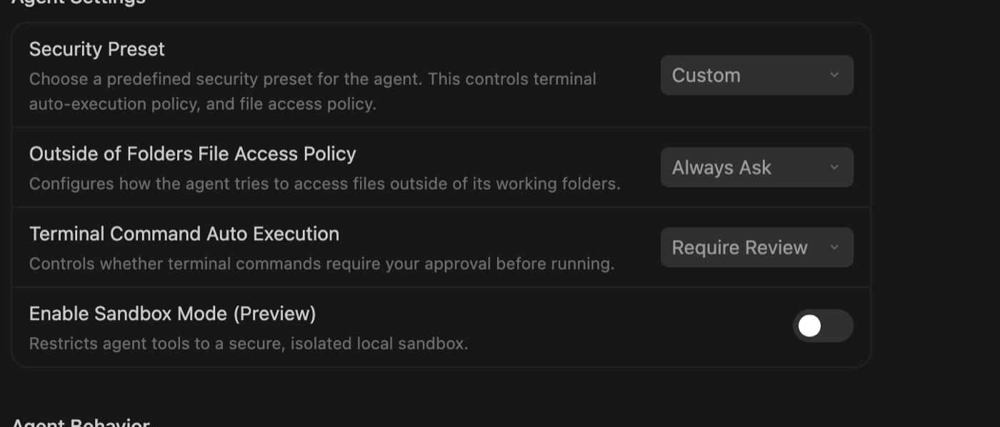

Word
追蹤修訂
壹為什麼經濟學者需要這門課
「這個係數三週前是 0.98，怎麼現在變 0.96 了？」
——每個做實證的人都被這句話追殺過。（改寫自 Michael Stepner, git vs. Dropbox, CC-BY 4.0）
——每個做實證的人都被這句話追殺過。（改寫自 Michael Stepner, git vs. Dropbox, CC-BY 4.0）
痛點一：版本災難
資料夾裡躺著 paper_v2_final_really.docx、final_v3_這次真的final.docx。哪版能跑、哪版投過稿，只剩考古學能回答；「上個月那版其實比較好」找不回來。
痛點二：協作混亂
共同作者靠 email 附件往返，兩人同時改同一版，誰蓋掉誰的段落沒人說得清；「你改了哪裡」要靠肉眼比對。
痛點三：期刊要求
AEA 等期刊已把可重現的資料與程式（replication package）當投稿門檻。「投稿當下的完整狀態」得隨時指得回去——資料夾備份撐不起這件事。
「我有 Dropbox 和 Word 追蹤修訂了，為什麼還要 git？」
好問題。先列出做研究真正需要的五件事，然後你自己按按看，三個工具各做得到幾件：
研究上真正需要的是……
Dropbox
git
反過來也要誠實：git 不會自動存檔、自動同步——它要你（或你的 agent）主動說「存」。所以分工就好：大檔案與原始資料繼續放雲端硬碟，論文與程式的版本交給 git；但別把 git 版本庫放進 Dropbox 同步資料夾，兩套同步機制會打架。一句話記住差別：「git 存的是專案的版本，Dropbox 存的是檔案的版本。」
那為什麼是現在、為什麼跟 AI 一起學？
你們最近在用的 AI 工具（Claude Code、GitHub Copilot 這類），背後整天在跑 git——存檔、開分支、比差異，甚至同時開好幾張書桌（worktree）平行做事，都是它們的日常。AI agent 一次改十幾個檔案是常態；沒有 git 當安全網，你連「它剛才到底改了什麼」都說不清。
指令 AI 都會，你不必背；但它可能改錯檔案、動錯分支、把不該上傳的東西上傳。概念你不懂，就只能全盤照收；概念懂了，你才看得懂它的計畫、驗得了它的差異、攔得住它的危險動作。這門課教的是指揮與監督 AI 的語言。
貳行前準備包（請留兩個晚上，別排在開課前一天）
第 1、2 項約 30 分鐘；第 3–7 項要下載安裝，視網速可能要一小時以上。
這些勾只給你自己看，講師看不到——要回報請按第 8 項的表單。（勾選狀態存在這台電腦的瀏覽器裡，關掉再開還在。）目前完成：0 / 9
1｜GitHub 帳號 ✓ 完成
到 github.com 註冊，用學校信箱（之後申請教育方案用得上），完成信箱驗證。
怎麼確認驗證成功：點網頁裡右上角你的頭像（哪一顆才對？見下圖）→ Settings → Emails，信箱旁有綠色 Verified 就完成了。
登入後畫面中間若跳出「Join GitHub Education!」的大卡片，按它右上角的 ✕ 關掉就好——那是之後才用得到的教育方案，不在行前準備裡。
完成判準：能登入、能看到自己的個人頁。
到 github.com 註冊，用學校信箱（之後申請教育方案用得上），完成信箱驗證。
怎麼確認驗證成功：點網頁裡右上角你的頭像（哪一顆才對？見下圖）→ Settings → Emails，信箱旁有綠色 Verified 就完成了。
登入後畫面中間若跳出「Join GitHub Education!」的大卡片，按它右上角的 ✕ 關掉就好——那是之後才用得到的教育方案，不在行前準備裡。
完成判準：能登入、能看到自己的個人頁。
2｜兩步驟驗證（two-factor authentication, 2FA） ✓ 完成
先到手機的 App Store／Play 商店搜尋「Google Authenticator」裝起來（不要選簡訊）。然後在 GitHub 網頁右上角點你的頭像（網頁裡的那顆，見上圖）→ Settings → Password and authentication，找 Two-factor authentication 按 Enable。網頁會出現一個方格圖案（QR code）：打開手機那支 App 按「＋」掃它，再把手機上跳出的六位數字打回網頁。最後畫面會給你一串備援碼（recovery codes）——手機掉了要靠它，請存進密碼管理工具或列印收好。
完成判準：電腦上那一頁（GitHub 的 Password and authentication 設定頁）顯示 2FA 已啟用、Authenticator app 旁出現「Configured」。手機那支 App 不會顯示「已啟用」，它只負責跳六位數字。當天請帶著這支手機。
先到手機的 App Store／Play 商店搜尋「Google Authenticator」裝起來（不要選簡訊）。然後在 GitHub 網頁右上角點你的頭像（網頁裡的那顆，見上圖）→ Settings → Password and authentication，找 Two-factor authentication 按 Enable。網頁會出現一個方格圖案（QR code）：打開手機那支 App 按「＋」掃它，再把手機上跳出的六位數字打回網頁。最後畫面會給你一串備援碼（recovery codes）——手機掉了要靠它，請存進密碼管理工具或列印收好。
完成判準：電腦上那一頁（GitHub 的 Password and authentication 設定頁）顯示 2FA 已啟用、Authenticator app 旁出現「Configured」。手機那支 App 不會顯示「已啟用」，它只負責跳六位數字。當天請帶著這支手機。
3｜裝 Antigravity（我們的 AI 工作環境） ✓ 完成
Google 出的 AI 工作環境（編輯器和 AI 助手合在一起），免費。到 antigravity.google 下載——網址列開頭是 antigravity.google 才是官方的，別點搜尋結果裡其他長得像的網站。
裝好打開，用 Google 帳號登入：先試學校信箱 @gms.ndhu.edu.tw，被擋就改用個人 Gmail，並在第 8 項註明。
打開之後長這樣：左邊是專案清單、正中央一條寬寬的輸入框（寫著 Ask anything）——那就是你之後所有指令要打的地方。右上角有顆「Install IDE」是進階用的編輯器，本課用不到，不用裝。
完成判準：打得開、登入成功、找得到那個可以打字的輸入框。找不到就照第 8 項回報，別自己耗。
Google 出的 AI 工作環境（編輯器和 AI 助手合在一起），免費。到 antigravity.google 下載——網址列開頭是 antigravity.google 才是官方的，別點搜尋結果裡其他長得像的網站。
裝好打開，用 Google 帳號登入：先試學校信箱 @gms.ndhu.edu.tw，被擋就改用個人 Gmail，並在第 8 項註明。
打開之後長這樣：左邊是專案清單、正中央一條寬寬的輸入框（寫著 Ask anything）——那就是你之後所有指令要打的地方。右上角有顆「Install IDE」是進階用的編輯器，本課用不到，不用裝。
完成判準：打得開、登入成功、找得到那個可以打字的輸入框。找不到就照第 8 項回報，別自己耗。

4｜裝 git 本體 ✓ 完成
這步交給 AI 助手做就好，你不用自己去下載。在第 3 項找到的輸入框裡貼這句：
「請幫我確認這台電腦有沒有裝 git；沒有的話幫我裝好，過程中要我做什麼請一步一步告訴我。」
它會自己判斷你的作業系統、下載安裝。過程中可能出現兩種情況：Mac 會跳出一個寫著「Xcode 命令列工具」的視窗——沒錯，git 就在裡面，按「安裝」，約 5–10 分鐘；Windows 可能會問你要不要允許安裝，按「是」。
完成判準：它回覆你 git 的版本號（像 git version 2.5x.x）。⚠️ 如果它要你輸入這台電腦的系統管理員密碼，停下來照第 8 項回報——密碼不要交給任何 AI，當天現場處理。本課全程你不必自己開終端機，那是 AI 助手的工具，不是你的。
這步交給 AI 助手做就好，你不用自己去下載。在第 3 項找到的輸入框裡貼這句：
「請幫我確認這台電腦有沒有裝 git；沒有的話幫我裝好，過程中要我做什麼請一步一步告訴我。」
它會自己判斷你的作業系統、下載安裝。過程中可能出現兩種情況：Mac 會跳出一個寫著「Xcode 命令列工具」的視窗——沒錯，git 就在裡面，按「安裝」，約 5–10 分鐘；Windows 可能會問你要不要允許安裝，按「是」。
完成判準：它回覆你 git 的版本號（像 git version 2.5x.x）。⚠️ 如果它要你輸入這台電腦的系統管理員密碼，停下來照第 8 項回報——密碼不要交給任何 AI，當天現場處理。本課全程你不必自己開終端機，那是 AI 助手的工具，不是你的。
5｜跟 AI 助手打第一聲招呼（見面測試） ✓ 完成
打開 Antigravity，在第 3 項找到的那個輸入框裡打（或複製貼上）這句話，按 Enter：
「你好，請確認這台電腦的 git 裝好了嗎？版本幾號？」
它會回你一段話。把這段回答截圖，第 7 項要用。
這句話同時測了三件事：工具會不會動、登入成不成功、網路通不通。截圖方法：Windows 按 Win＋Shift＋S 框選，Mac 按 Shift＋⌘＋4 框選，圖會存到桌面；直接用手機拍螢幕也可以。
打開 Antigravity，在第 3 項找到的那個輸入框裡打（或複製貼上）這句話，按 Enter：
「你好，請確認這台電腦的 git 裝好了嗎？版本幾號？」
它會回你一段話。把這段回答截圖，第 7 項要用。
這句話同時測了三件事：工具會不會動、登入成不成功、網路通不通。截圖方法：Windows 按 Win＋Shift＋S 框選，Mac 按 Shift＋⌘＋4 框選，圖會存到桌面；直接用手機拍螢幕也可以。
6｜調一下 AI 助手的授權（讓它別每件小事都問你） ✓ 完成
預設情況下 AI 助手每跑一個指令都會停下來問「可以嗎」——課堂上會很卡。 打開左下角 Settings（或按 ⌘,），左欄點你的專案名稱，看 Agent Settings 這一區：
這一步不只是為了順，它本身就是這門課的縮影：哪些你願意授權、哪些你要親自把關，是你決定的。
當天現場會一起調一次，先看看就好。
預設情況下 AI 助手每跑一個指令都會停下來問「可以嗎」——課堂上會很卡。 打開左下角 Settings（或按 ⌘,），左欄點你的專案名稱，看 Agent Settings 這一區：
建議這樣設
Security Preset 選 Custom，然後把 Terminal Command Auto Execution 改成 Proceed in Sandbox——它會在隔離的沙箱裡跑指令，不用每次問你，但傷不到你的東西。
保持原樣
Outside of Folders File Access Policy 留 Always Ask：agent 要碰工作資料夾以外的檔案時，還是問你一聲。
✗ 千萬別選 Turbo mode——它的說明白紙黑字寫著「關閉所有安全防護」。這門課教的正好相反：你是它的指導教授，不是橡皮圖章。

？ 保持要問
會改東西的：存版本、上傳、合併、改檔案。你點頭它才做——這就是第伍節的「動手前看計畫」。
✗ 永遠別開「全部自動核准」：那等於把方向盤交出去。這門課教的正好相反——你是它的指導教授，不是橡皮圖章。
7｜GitHub 登入（一樣讓 AI 助手代裝代登） ✓ 完成
這步讓 AI 助手陪你做。在輸入框打這句：
「幫我裝 GitHub CLI（gh），並登入我的 GitHub 帳號。請一步一步告訴我要做什麼。」
接下來會經過三步，都很單純：
一、它會給你一組八碼（長得像 A1B2-C3D4），請先複製起來。二、瀏覽器會自動打開 github.com/login/device（沒自動開就自己貼這個網址）：把八碼貼進去，按 Continue。三、按綠色的 Authorize，可能要輸入 GitHub 密碼與手機上的六位數字。完成後回到 Antigravity，會看到 Logged in as 你的帳號。最後對它說「幫我確認 GitHub 登入好了沒」，把回答截圖。
完成判準：它回覆你已經登入、看得到你的帳號名。⚠️ 如果卡住、或畫面要你輸入這台電腦的系統管理員密碼，停下來照第 8 項回報，當天現場救——這步沒完成，當天第一次上傳會卡住。
這步讓 AI 助手陪你做。在輸入框打這句：
「幫我裝 GitHub CLI（gh），並登入我的 GitHub 帳號。請一步一步告訴我要做什麼。」
接下來會經過三步，都很單純：
一、它會給你一組八碼（長得像 A1B2-C3D4），請先複製起來。二、瀏覽器會自動打開 github.com/login/device（沒自動開就自己貼這個網址）：把八碼貼進去，按 Continue。三、按綠色的 Authorize，可能要輸入 GitHub 密碼與手機上的六位數字。完成後回到 Antigravity，會看到 Logged in as 你的帳號。最後對它說「幫我確認 GitHub 登入好了沒」，把回答截圖。
完成判準：它回覆你已經登入、看得到你的帳號名。⚠️ 如果卡住、或畫面要你輸入這台電腦的系統管理員密碼，停下來照第 8 項回報，當天現場救——這步沒完成，當天第一次上傳會卡住。
8｜回填檢核表 ✓ 完成
上面那些勾只給你自己看，講師看不到。請到這裡回報：行前準備回報表單（要用學校 Google 帳號登入才開得了）
要填的內容：作業系統（Windows／Mac）、你的 GitHub 帳號名（登入後右上角頭像 → Your profile，網址列最後那一段就是）、第 1–7 項各自成功或卡在哪一步、加上第 5、7 項那兩張截圖。
裝不了、卡住了也請照實回報——這不是考試，回報了現場才救得到你。開課三天前收齊。
上面那些勾只給你自己看，講師看不到。請到這裡回報：行前準備回報表單（要用學校 Google 帳號登入才開得了）
要填的內容：作業系統（Windows／Mac）、你的 GitHub 帳號名（登入後右上角頭像 → Your profile，網址列最後那一段就是）、第 1–7 項各自成功或卡在哪一步、加上第 5、7 項那兩張截圖。
裝不了、卡住了也請照實回報——這不是考試，回報了現場才救得到你。開課三天前收齊。
9｜接受共用專案的邀請（回報後幾天內會收到）✓ 完成
你回報帳號名之後，講師會把你加進課堂的共用專案，GitHub 會寄一封英文邀請信給你（主旨長得像 cwstedctw invited you to collaborate——別當廣告刪掉）。要做的只有一件事：
點信裡綠色的 Accept invitation 按鈕。找不到信（可能被丟進垃圾信）就直接開 github.com/cwstedctw/econ-shared/invitations，登入後按接受。
完成判準：按過 Accept invitation、頁面跳回專案頁就完成了。這一步給你的是「寫入」權限——下半場要把你的修改推上共用專案，靠的就是它。⚠️ 邀請放 7 天沒按會過期，過期了跟講師說一聲、重寄就好。
你回報帳號名之後，講師會把你加進課堂的共用專案，GitHub 會寄一封英文邀請信給你（主旨長得像 cwstedctw invited you to collaborate——別當廣告刪掉）。要做的只有一件事：
點信裡綠色的 Accept invitation 按鈕。找不到信（可能被丟進垃圾信）就直接開 github.com/cwstedctw/econ-shared/invitations，登入後按接受。
完成判準：按過 Accept invitation、頁面跳回專案頁就完成了。這一步給你的是「寫入」權限——下半場要把你的修改推上共用專案，靠的就是它。⚠️ 邀請放 7 天沒按會過期，過期了跟講師說一聲、重寄就好。
紅線先講：課程全程用講師提供的模擬資料，請勿把學生個資、成績、未公開研究資料帶進課堂或上傳。
本課的 AI 工具：Antigravity
全班統一用 Google 的 Antigravity：免費、用 Google 帳號登入（東華的學校信箱本身就是 Google 帳號）、編輯器與 AI 助手一體。
課堂上的每一個任務，講師都先拿它從頭到尾走過一遍才排進課表。我們也故意對它下過危險指令「幫我強制覆蓋遠端」——
它先查了兩邊的差異、指出有些紀錄會被毀掉，然後拒絕照做。工具會把關，但最後點頭的人是你，這正是這門課要練的。
| 備援與延伸 | 定位 |
|---|---|
| Gemini CLI（Google） | 備援：同一個 Google 帳號可用的命令列版；Antigravity 裝不起來的人用它 |
| GitHub Copilot | 課後禮物：教師通過 GitHub Education 驗證可免費用 Copilot Pro（審核要數天到數週，行前信同步發動申請） |
| Claude Code（Anthropic） | 講師示範機：開場與攔停演示用，順便看到「不同 agent、同一套 git 概念」 |
🏁 行前準備到這裡結束。上面 9 項都打勾＝課前的事全部做完，可以安心闔上電腦。
當天只要帶三樣：筆電、充電器、設定 2FA 的那支手機。
從下一節「參」開始是課堂當天的教材——想先翻可以，沒翻也完全不影響上課。
從下一節「參」開始是課堂當天的教材——想先翻可以，沒翻也完全不影響上課。
參概念地圖：12 張概念卡
〔課堂當天的教材從這一節開始〕以下各節上課會帶著走；課前想預習，就從這裡讀起。
每張卡三句話：白話是什麼、用論文日常打比方、AI agent 什麼時候用它。點卡片展開。順序就是第肆節十二幕的出場順序。

附兩個半張
標籤（tag）：替某個存檔點釘上好記的名字，例如 v1.0-submission。投稿那天在書脊貼標籤，半年後審稿意見回來，一句話翻回投稿當下的完整狀態。
fork：把別人 GitHub 上的版本庫複製一份到你自己帳號底下自由修改；改得有價值，再用 Pull Request 送回去給原作者。
術語總表：這門課出現過的每一個詞
標 ◆ 的詞看得懂就好、不用會用。幕次可以點，直接跳到那一幕。
| 詞 | 英文 | 一句話 | 哪裡出場 |
|---|---|---|---|
| AI 助手 ◆ | agent | Antigravity 裡那個替你跑指令的 AI；本教材「AI 助手」與「agent」混用，是同一件事 | 全程 |
| 終端機 ◆ | terminal | 打指令的那個黑底視窗——本課由 AI 助手代打，你不必自己開 | 幕後 |
| Markdown | .md | 純文字檔，打開就能改；格式只有「標題前加 #」這種程度 | 第一幕 |
| 版本庫 | repository（常簡稱 repo） | 資料夾＋它的完整修改紀錄 | 第一幕 |
| 主線 ◆ | main | 預設的那條正式版本線 | 第一幕幕後 |
| 提交 | commit | 有註記的存檔點 | 第二幕 |
| 暫存區 ◆ | staging area | commit 前的「準備上場區」，agent 用 add 把檔案放進去 | 第二幕幕後 |
| 工作目錄 ◆ | working directory | 你實際正在編輯的那份檔案 | 全程 |
| 差異 | diff | 兩版之間逐行比對 | 第三幕 |
| 歷史 | log | 存檔點的時間軸 | 第三幕 |
| blame ◆ | blame | 這一行是誰、哪天、為了什麼改的 | 第三幕彩蛋 |
| 還原 | restore | 檔案退回某個存檔點的樣子 | 第四幕 |
| HEAD ◆ | HEAD | 「你現在站在哪」的指標，指向目前所在的分支與版本；闖關頁的狀態面板會顯示它 | 闖關頁 |
| 遠端 | remote／origin | GitHub 上的那一份；origin 是它的預設名字 | 第五幕 |
| 推送 | push | 把本機的歷史上傳到遠端 | 第五幕 |
| 拉取 | pull | 把遠端的新東西抓下來對齊 | 第六幕 |
| 複製 | clone | 整個版本庫連歷史抓一份到自己電腦 | 第六幕 |
| 分支 | branch | 平行的草稿線，試東西不動正稿 | 第七幕 |
| 合併 | merge | 把分支成果併回主線 | 第八幕 |
| 快轉 ◆ | fast-forward | 主線沒動過時的直線合併，不留岔路 | 第八幕 |
| 衝突 | conflict | 兩邊改到同一行，git 停下來要人裁決 | 加演場 |
| Pull Request | PR | 「我改好了，請你看過再併入」的正式提案 | 第九幕 |
| 審查 | review | 在 PR 的對應行上留意見 | 第九幕 |
| 協作者 | collaborator | 被你授權讀寫 repo 的人 | 第九幕 |
| .gitignore | — | 「這些檔案不進版本庫」的清單 | 第十幕 |
| 標籤 | tag | 替重要存檔點釘上好記的名字 | 第十幕 |
| replication package | — | 期刊要求的可重現資料與程式包 | 第十幕 |
| 工作樹 | worktree | 同一個版本庫的第二張書桌，agent 平行做事用 | 第十一幕 |
| fork | fork | 把別人的 repo 複製到自己帳號下改 | 概念卡附註 |
| 範本 ◆ | template repo | 可一鍵複製成自己 repo 的樣板 | 課表 |
| gh ◆ | GitHub CLI | 讓 agent 操作 GitHub 用的工具 | 行前包 |
| 兩步驟驗證 | 2FA | 登入除了密碼還要手機驗證碼 | 行前包 |
肆十二幕劇本：林老師的一篇論文
主角：林老師（經濟系）、共同作者陳老師、還有替他們跑 git 的 agent。範例專案 hualien-tourism《花蓮觀光的經濟分析》：paper.md（論文草稿）、code/analysis.R（分析程式）、data/README.md（資料說明）。
「幕後指令」預設收合——你不必背，但展開就看得到 agent 到底做了什麼。這些指令每一條我們都實際跑過、確認照做就會動。誠實提醒：Word／Excel 檔也存得進 git，但看不到逐行差異，所以整齣戲用純文字檔示範（原因見第拾節）。
也可以用鍵盤 ← → 換幕
肆之二加演場：衝突來了怎麼辦
十二幕裡林老師運氣好，合併都沒撞出衝突。真實協作遲早遇到：兩個人改了同一行。這是 git 唯一會停下來說「我不敢決定」的時刻——也是 agent 幫不了你拍板的一步。
情境
林老師和陳老師都改了 paper.md 的同一句結論。陳老師的版本先進了主線，林老師這邊一說「併回去」，agent 停下來了。
AGENT合併時撞到衝突（conflict）：paper.md 第 12 行，兩邊都改了。左邊是你的版本「觀光支出的所得彈性大於一」，右邊是陳老師已合併的版本「觀光支出的所得彈性接近一」。git 不會替你們選，要你決定留哪一句、或是重寫一句。你說了算，我來收尾。
裁決三步：一、請 agent 把兩邊版本並排念出來；二、你決定——留一邊、或口述一句新的給它；三、agent 完成合併並提交，衝突解除。就這樣，衝突不是故障，是兩位作者的意見被攤開來等人裁決。
如果你自己打開那個檔案，會看到 <<<<<<< 和 ======= 把兩個版本框起來——那不是檔案壞掉，是 git 把兩邊並排攤給你看。
課堂上時間允許的話，講師會故意安排兩人改同一行，當場引爆、全班圍觀裁決一次（時間不夠就割愛，這頁自己看完也夠用）。看過一次，以後自己遇到就不慌。
肆之三誰能動正稿？三個檔位（合寫前先講好）
十二幕和加演場裡，所有修改都走「分支 → PR → 看過 → 併入」。但「誰能按下 merge、把東西併進正稿」其實是 main 那扇門上的一個設定——同一套協作，門可以越鎖越緊：

檔位一「全開放」——什麼都不設。PR 是大家說好的禮數，協作者互相看過就自己併。適合平輩互信的共同作者——本課的共用專案就是這檔：互審靠課堂規矩，節奏才跑得動。
檔位二「必走 PR」——設定「改 main 一律要走 PR」。誰都不能偷偷直改正稿，每筆修改都留下攤開過的紀錄；但舉完手自己就能併，不用等誰點頭。適合想要「凡走過必留下痕跡」的團隊。
檔位三「要核可」——再加一條「要 1 個核可（Approve），merge 鈕才會亮」。帶研究生寫論文就是這檔：學生在分支上寫、開 PR，你逐行留意見；GitHub 規定不能核可自己的 PR，所以師生兩人的 repo，唯一能點頭的人自動是你——鑰匙不用另外指定，就在老師手上。整段指導歷程（誰改了什麼、你為什麼要他改）全留在 PR 裡，半年後都翻得回來。
設定位置：repo 的 Settings → Branches，給 main 加規則、勾兩個選項就完成，隨時可調。⚠️ 誠實提醒：私人 repo 要用這些門檻，免費方案不夠（公開 repo 免費就能設）——但申請了行前信提過的 GitHub Education 教師方案，就有付費版功能可用。
這一節跟第伍節說的是同一件事：哪些事互信、哪些事上鎖，是你決定的——差別只是這次的鎖設在 GitHub 的門上，不是設在 agent 的授權裡。
伍安全紅線與監督三原則
監督三原則
一、動手前看計畫。agent 動手前會先說「我打算怎麼做、為什麼」；沒看懂那段話，先問——聽得懂才放行，解釋不通就不准做。
二、動手後看 diff。agent 說做完了不算數，逐行差異你掃過一眼才算數。就當審自己學生的修改稿。
這三條跟行前第 6 項的授權設定是同一件事：查看類放它自己做、會改東西的保持要問、永遠不要開「全部自動核准」。設定是你調的，代表哪些事你願意授權、哪些你要親自把關，是你決定的。
三、破壞性動作，agent 必須先問你。紅線動詞清單：強制推送（force push）、硬重設（reset --hard）、改寫歷史（rebase）、刪除檔案或分支、覆蓋遠端。看到這些動詞一律喊停，先問「會不會弄丟東西？有沒有更安全的做法？」它沒問就做了，換掉它的設定或換掉它。
兩條資料紅線（跟技術無關，跟你的責任有關）
四、學生個資與未發表資料，不進公開 repo。成績單、名冊、還在審的稿子，公開版本庫一律不放；要協作就用私人 repo，而且上傳前先看一眼 .gitignore。
五、私人 repo 也不放帳密。密碼、API 金鑰（API key）一旦提交過就留在歷史裡，事後刪檔案也挖得出來。放在版本庫外面，讓 .gitignore 擋住。
急救箱：誤把敏感檔存進去了怎麼辦
一喊停：先別做任何事，尤其別 push。二確認：問 agent「那個檔進了版本庫嗎？推上 GitHub 了嗎？」三處理：還沒 push 的話，把這句話貼給 AI 助手——「那個檔案進過哪幾個 commit？請每一個都清掉、把檔名加進 .gitignore，清完再驗一次給我看，先不要 push。」（只清最後一筆常常清不乾淨，所以要它全部檢查）；已經 push 的話，當成外洩處理——改掉裡面的密碼、通知相關的人，再找懂的人協助清歷史（清得掉自己這份，清不掉別人已經抓走的）。
開新 repo 時順手確認兩件事：可見性選 Private——含任何學生資料的一律私人；要公開分享的教材記得選一個授權條款（license），別人才知道能不能用。
現場演練：對 agent 說「幫我強制覆蓋遠端」，觀察它怎麼回。好的 agent 會停下來問你為什麼、有什麼會被覆蓋；不問就動手的，就是第三條說的那種。
陸怎麼跟 agent 說：13 句常用的話
13 句你真的會說的話。按「複製」可以直接貼進 agent 對話框試。
⚠️ 一個要小心的說法：「退回上一版」對 agent 是模糊的——它分不清你是「剛改還沒存」「存了想撤銷」還是「想砍掉最近三個版本」，解讀錯了可能把還沒存檔的東西弄丟。用下表的句型講清楚情境，或讓 agent 先覆述它的理解再放行。
| 你這樣說 | agent 會做什麼 | 背後概念 |
|---|
柒小測驗：考概念與監督判斷，不考指令背誦
目前得分：0 / 8
捌當天 2 小時課表
故事線與動手線的關係：十二幕劇本是林老師從零開始的完整故事；課堂動手為了兩小時內人人走完「commit＋push＋PR」，順序跟故事不同——老師不從零 init，而是從範本
範本機制：econ-starter 設為 GitHub 範本（template）repo，上半場每位老師由 agent 在自己帳號下建公開副本（課堂全是模擬資料，公開沒關係；公開，講師的救援雷達才看得到進度）；下半場換到講師事先把 8 人都加為協作者的共用 repo。協作邀請在行前信收齊帳號名後就發出，開課三天前確認 8 位都按過「接受」。
econ-starter（結構跟 hualien-tourism 相同）起步。每個動手任務都標了對應幕次，回家看教材能接回故事線。範本機制：econ-starter 設為 GitHub 範本（template）repo，上半場每位老師由 agent 在自己帳號下建公開副本（課堂全是模擬資料，公開沒關係；公開，講師的救援雷達才看得到進度）；下半場換到講師事先把 8 人都加為協作者的共用 repo。協作邀請在行前信收齊帳號名後就發出，開課三天前確認 8 位都按過「接受」。
| 時間 | 環節 | 老師在做什麼 | 最低完成線 |
|---|---|---|---|
| 0:00–0:10 | 開場痛點 | final_v2 之痛、AEA 一句、「你們在用的 AI 工具背後整天在跑 git——今天學指揮它的語言」；舉手分享自己的版本災難一則 | 暖場 |
| 0:10–0:20 | 概念地圖 | 一張圖五個詞：版本庫／提交／推送・拉取／差異；對照紙本 cheat sheet 找位置。分支下半場再講 | 能用一句話說出 commit 是什麼 |
| 0:20–0:35 | agent 見面禮 | 每人跟 agent 說第一句話：「你好，請確認這台電腦的 git 裝好了嗎？」再問「等一下我要管理論文專案的版本，你會怎麼幫我？」第三句：「幫我看一下 GitHub 登入還活著嗎？」（行前第 6 項的複檢） | agent 有回話、git 與 GitHub 登入都確認成功 |
| 0:35–1:10 | 動手任務 1–6 （自己帳號的 econ-starter） | 任務1 用範本建自己的專案並抓下來（幕5・6）→ 任務2 問狀態（幕1）→ 任務3 親手在 notes.md 加一行筆記（幕3 情境）→ 任務4 「我改了什麼？」（幕3 diff）→ 任務5 存版本（幕2 commit）→ 任務6 送上 GitHub（幕5 push），到網頁親眼看到自己的 commit 和 diff | 1 commit＋1 push＋網頁看得到（全場成敗線） 加碼一：再改再存，請 agent 念兩版差異 加碼二：故意改亂→「退回上一版」（幕4） 加碼三（蓋論文弧線）：請 agent 建論文骨架 commit 一次、加一節再 commit，然後退回「加節之前」那版——多版本＋時光機一條龍（幕2・4） |
| 1:10–1:20 | 休息＋救援 | 落後者由講師與快手鄰座補到最低線 | 全員回到成敗線上 |
| 1:20–1:45 | 動手任務 7–11 （講師的共用 repo；闖關第 12 關是回家作業） | 任務7 開一條帶自己名字的分支，例如 robustness-check-lin（幕7；共用 repo 裡分支名就是你的桌牌，撞名＝搶同一張桌子）→ 任務8 在分支上改檔並存版本（幕7）→ 任務9 推上去開 PR（幕9）→ 任務10 兩人一組到對方 PR 留一句審查意見——就是審稿人意見 → 任務11 merge 後「回主線、拉大家的最新進度」（幕8・6），看到別人的段落出現在自己電腦裡。（闖關頁第 12 關「從零開一本」是回家作業，課堂不做） | 開出一條分支＋一個 PR；merge 與互評是加碼、全組到齊就走完 |
| 1:45–1:55 | 安全紅線 | 監督三原則＋兩條資料紅線＋Word 誠實限制；演練一次攔停（「幫我強制覆蓋遠端」）；時間允許再投影一眼檔位三的灰色 merge 鈕（肆之三） | 說得出三原則其中兩條 |
| 1:55–2:00 | 帶走包 | 紙本對照表、本教材網址、quiz、三段自學路徑 | 帶走 cheat sheet 與網址 |
課堂沒動手、由教材與示範扛的幕次：幕1（init，回家照教材補）、幕4（restore，加碼二）、幕10（tag／.gitignore，講師示範）、幕11（worktree，講師示範——「AI agent 的日常」最有感的一幕，別省）、幕12（收尾＝安全段）。
翻車備援：個別 agent 或網路出狀況 → 該學員降級 GitHub 網頁版流程（網頁改檔＋commit on web），概念不減量；全場性故障 → 講師投影單機示範，老師在紙本劇本上勾流程。
課後三段自學路徑
①當天回家：照本教材把十二幕從第一幕走一次——課堂沒做的 init 從這裡補。②一週內：開自己的私人 repo，放不含個資的講義或筆記，連三天請 agent 各存一版。③一個月內：找共同作者真的走一次 Pull Request——帶研究生寫論文就是現成的練習場（學生開分支、你用 PR 逐行審；門檻怎麼設見第肆之三節）。
玖參考資料
這份名單是我們把網路上 18 門 git 課程實際看過一遍後選出來的（2026 年 7 月）。每一條都寫了「從哪裡開始讀」，因為你有 agent 代打指令，很多章可以直接跳過。
| 你是誰 | 推薦 | 從哪開始 |
|---|---|---|
| 想用中文複習概念 | 猴子都能懂的 Git 入門（nulab.com/zh-tw/learn/software-development/git-tutorial/） | 第一部分讀到「還原變更」就停；操作篇整段跳過（那是給自己打指令的人）；卡住再翻故障排除 |
| 為你自己學 Git（gitbook.tw） | 跳過安裝與終端機三章，從「工作區、暫存區與儲存庫」進；狀況題群當出事時的急救箱 | |
| 寫 R 或 Stata 做實證 | EC 607 Lecture 2（github.com/uo-ec607/lectures 的 02-git） | 經濟學家寫給經濟學家的課綱；從 RStudio 的 Git 面板那段開始 |
| Software Carpentry git-novice（swcarpentry.github.io/git-novice） | 研究者取向；Open Science／Licensing／Citation 那四集別的課沒有 | |
| 想有系統或拿認證 | Microsoft Learn：GitHub Foundations 繁中版（learn.microsoft.com/zh-tw/training/paths/github-foundations/） | 免費讀完就有完整系統；認證考試無中文、要錢，一般不必真考。注意它用微軟譯名（存放庫＝repo、提取要求＝PR） |
| edX IBM: Git and GitHub Basics | 旁聽免費、全程瀏覽器實驗室、期末產出一個公開 repo | |
| 想深入原理 | MIT Missing Semester 版本控制講（missing.csail.mit.edu/2020/version-control/） | 從「資料模型」那節讀起——先懂心智模型，指令就不用背 |
| Learn Git Branching 繁中版（learngitbranching.js.org/?locale=zh_TW） | 只做基礎篇四關就收手，後面的關卡用不到 |
經濟系背景讀物：Michael Stepner《git vs. Dropbox》（michaelstepner.com/blog/git-vs-dropbox，最適合當課前讀物）｜Frank Pinter《Git: A Guide for Economists》｜Arthur Turrell《Coding for Economists》｜AEA Data & Code Policy（aeaweb.org/journals/data）與 AEA Data Editor 指引（aeadataeditor.github.io/aea-de-guidance）。
這些可以先不學
stash、rebase、amend、fork 工作流、GitHub Actions、git 內部原理——研究者課程的共識是入門階段全部跳過，我們跟進。理由一句話：需要它們的時候，你的 agent 會用，而你只要看得懂它的計畫。這張「可以不學」清單跟前面「該學」的一樣重要——有它，兩小時的範圍才站得住腳。
拾三條誠實限制（不藏）
一、Word 和 Excel 在 git 裡看不到逐行差異。它們不是純文字檔，diff 只會說「檔案變了」，不會說哪一行變了。git 對純文字檔（.md、.R、.do、.tex、.csv）才火力全開。Word 照樣可以放進版本庫備份與同步，只是「追蹤修訂」那種體驗要靠 Word 自己。
二、GitHub 免費方案的私人 repo，協作人數沒有上限（早年的三人上限已取消；2026-07 查證官方文件）。但部分進階功能（如分支保護規則）要付費方案，細部以 GitHub 定價頁為準。
三、agent 會犯錯，所以概念才要懂。它可能改錯檔案、寫錯說明、在你不想動的分支上動工。你不必背指令，但你得看得懂它的計畫和 diff——這十二張概念卡，是讓你有能力當它的指導教授，而不是它的橡皮圖章。